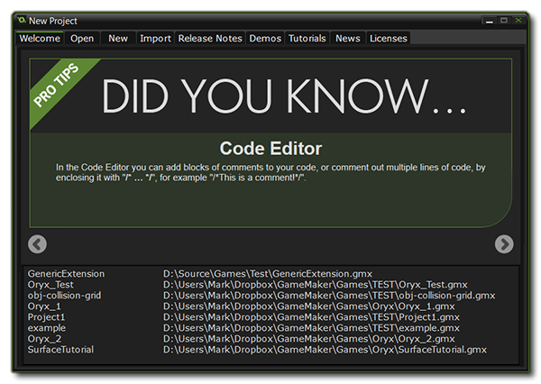
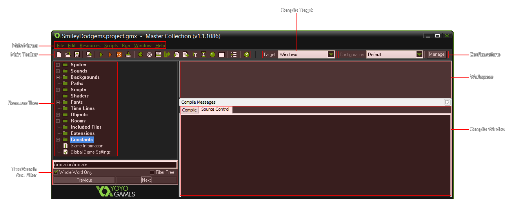
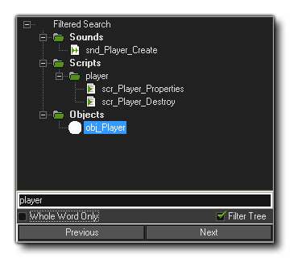
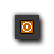
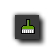
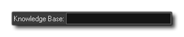

On starting GameMaker: Studio the following form is
normally shown which presents you with a selection of options to
choose from (unless you use the Steam Client, see
below):

If you have bought GameMaker: Studio through Steam,
then on startup you will be presented with an options screen (shown
below) from which you can select to Play games from the
Steam Workshop, or to
Make games with the program. If you select Play then
GameMaker: Studio will close and the Steam Player will open, however if you
choose Make then you will be presented with the standard
GameMaker: Studio start-up screen.
At the top of the general start-up screen you can see that there
are nine tabs: Welcome (always the initial start-up screen), Open,
New, Import, Release Notes, Demos, Tutorials, News and Licences.
Here is a brief overview of the function of each of those tabs:
- Welcome: This is the start-up screen you see when opening up GameMaker: Studio. At the bottom you have a list of previously opened files.
- Open: Here you can browse your computer for files to open.
- New: This will ask you to select the directory you wish to use for a new project and prompt you to enter a name for this project which is then saved and opened in the main GameMaker: Studio runner.
- Import: Here you can load up the compressed *.gmz project files and also import game files created with other versions of GameMaker, including GameMaker 6 (*.gm6), GameMaker 7 and 8 (*.gmk and *.gm81) as well as GameMaker 8.1 (*.gm81) and much older (*.gmd) files. It should be noted, that the older the file type, the less likely they are to run without a lot of rework due to the changes wrought in GameMaker through the years. Additionally, you can load up GameMaker backup files (*.gb1, *.gb2 etc) from this tab too.
- Release Notes: If you click on this button you can see the release notes for each released version of GameMaker: Studio. These notes outline all the bug fixes and changes that have been incorporated into the program and tell you which version you are currently using.
- Demos: This will allow you to view demo files that come with GameMaker: Studio. Demos are different to tutorials in that they focus on explaining just one function or concept rather than giving a general overview, and as such it is recommended that you have a working knowledge of GameMaker: Studio and GML before opening these. These demos are pulled from an RSS feed, so you will need an active internet connection to access them. You can also refresh the feed (to check for new files) by clicking the button at the bottom left of the window.
- Tutorials: This tab shows you a selection of tutorials that come with GameMaker: Studio. These are designed as an introduction to using GameMaker: Studio and it is recommended that new users look them over before starting any new projects of their own. As with the Demos, these are pulled from an RSS feed, so you will need an active internet connection to access them. You can also refresh the feed (to check for new files) by clicking the button at the bottom left of the window.
- News: This will display the most recent news from YoYo Games. This news includes information about GameMaker: Studio development, new versions, competitions and anything else that has been posted on the YoYo Games website.
- Licenses: This tab will display the GameMaker: Studio license, as well as all the various third party licenses of products that are used.
Beneath the tabs, there is a section with hints, tips and offers
related to GameMaker: Studio, which you can scroll through
using the arrow icons on either side, and beneath that you will see
listed any projects that you have previously opened so that you can
quickly get back to work where you left off previously.
To begin creating your first game project, you can click on
either the New Project tab, where you can select to either
load a previous project, or start a new one. When starting a new
one, you can provide the directory to save the project files to
(which will be saved using the *.GMX format), as well as assign a
name to your new project. Clicking Create will then create
and save the initial project files.
Once you've loaded or created your project in GameMaker:
Studio the main GUI is shown and looks something like this:

This is the main interface for GameMaker: Studio and it's
here that you control every aspect of your current project. On the
left, you can see the different resources mentioned in other
sections of the manual: Sprites, Sounds, Backgrounds, Paths,
Scripts, Fonts, Time Lines, Objects, Global Game Settings and
finally, Extensions. At the top of the window there is the menu and
a handy toolbar to access some of the most used commands when
creating a game. We will briefly discuss the various menu items,
buttons, etc... below, but they will be covered far more in-depth
in the later sections of the manual. One thing you should realise
at this point is that many of the same things can be achieved in
various different ways when working with GameMaker: Studio,
either by choosing a command from the menu, by clicking a toolbar
button, or by right clicking on a resource. This redundancy is
there so that you can get working with GameMaker: Studio in
the easiest and most natural way, using whatever system you feel
most comfortable with.
Steam users have three additional buttons on the
toolbar:
This first button will open the Steam Player where you can play any games you have subscribed to or uploaded to the Steam Workshop.
This second button will open up the page of the GameMaker: Studio Steam Workshop in the Steam client window on your PC.
The final button available to you will open another version of the GameMaker: Studio IDE so you can have two (or more) projects open at one time.
At the left of the main form you find the resource tree. Here you will see a "tree" view of all the resources in your game. It works in the same way as Windows Explorer, and you are most likely familiar with how it should work. If an item has a + sign in front of it you can click on the sign to see the resources inside it (expand it). By clicking on the - sign these disappear again (collapse it). You can change the name of a resource (except the top level ones that show the type of resource contained within) by selecting it once with a single click, and then giving another single click on the name once again. Double clicking on a resource in quick succession will automatically open its properties form where you can edit and change things related to it. Use the right mouse button to call up a context specific window that contains most of the same commands as found in the Edit Menu where you can add, copy, remove or view the selected resource. You can find a full list of the resource tree right-click menus from the following section:
You can change the order of the resources by clicking on a
specific resource and then dragging it to the appropriate place
within its resource group. You can also filter the resource tree to
only show those things that are of interest to you using the search
and filter options at the bottom:

The toolbar in GameMaker: Studio contains buttons to
create each of the resources you see present as well as a selection
of additional buttons to create a new project, open an existing
project, save a project, create an executable (export a final
project), open the Global Game Settings and Extension Packages as
well as opening the Help file. All these commands can also be
accessed through the drop-down menus or by using certain "hot key"
combinations.
There are two buttons of note here however, as they are not present
anywhere else in the GameMaker: Studio GUI:
Stop Web Server
This button can be used to cancel the compilation of your games to
the target module, or (on certain targets only) to stop the game
while it is running after it has been compiled.
Clear Project Asset
Compile Cache
Pressing this button will clear the current asset compiler cache.
GameMaker: Studio stores images, sounds, scripts etc...
between use in a cache so as to save time when testing your game as
it will only re-compile those things that have been changed before
testing. However, this cache may become corrupted over time, or you
may wish to do a full test with no caching being done previously,
in which case you can clear the cache by pressing this button.
This drop-down menu allows you to choose which device to target when compiling and testing your game. In this way you can quickly change between the different modules that you have installed on GameMaker: Studio and make sure that your project works as it should on all of them. The available target modules are:
| Windows | included in all versions |
| Steam WORKSHOP | included in all versions of GameMaker: Studio bought through Steam |
| MacOSX | additional module for the Professional Version |
| Windows 8 (Native) | additional module for the Professional Version |
| HTML5 | additional module for the Professional Version |
| Ubuntu | additional module for the Professional Version |
| iOS | additional module for the Professional Version |
| Android | additional module for the Professional Version |
| Windows Phone | additional module for the Professional Version |
Please note that the additional modules can only be bought for
the Professional
Version of GameMaker: Studio, and if you have bought
GameMaker: Studio through Steam, you will also have
another target platform for your game which is the Steam
Workshop. This target will permit you to publish your Windows
games straight to Steam for others to download and play. For more
information on this target please see here.
Here you can find a drop-down menu that permits you to select the current configuration of GameMaker: Studio and beside this there is a button labelled "Manage". By clicking this you can open the Configurations Window which permits you to add, remove and rename configurations. For more information on configurations see this section:
NOTE: This functionality is limited to the Professional Version
of GameMaker: Studio.
This is the area where you will be editing your resources,
setting up rooms and working with your objects, code and all other
resources.
At the very top of the GUI you will find the drop-down menus. As
there are a number of them and each has its own selection of
options, you can find out more about them from the pages listed
below:
There is one final feature of the GameMaker: Studio GUI
which is worth noting, and that is the search box that can be found
to the top right of the IDE:  If you are looking for more
detailed information on a subject and the manual doesn't cover it
(there are many things outside of the scope of this document) or
you think there may be a bug, then you can type a few keywords here
and it will search the YoYo Games Knowledge Base then open a tab in
your browser showing you a list of the topics that are available.
For example, if you require further information on advertising,
simply typing "ads" into this search box and hitting "Enter" will
take you to the following page: List Of
Ads Tutorials.